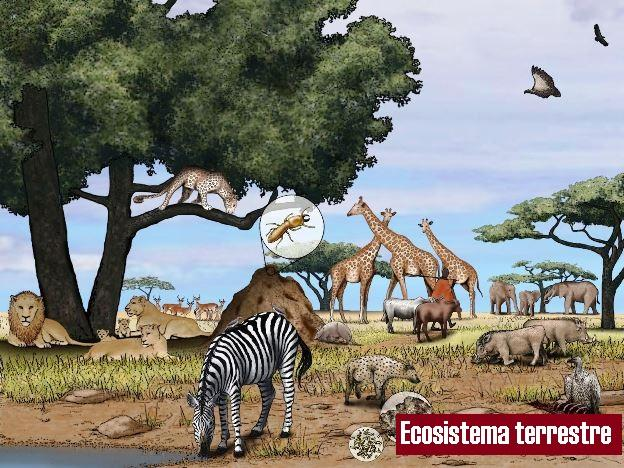
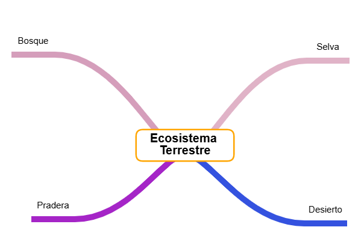

Información
ECOSISTEMA TERRESTRE

El ecosistema terrestre es aquel donde los seres vivos habitan en la tierra y dependen del suelo, el aire y el clima para sobrevivir. En este tipo de ecosistema viven animales y plantas que se adaptan a diferentes condiciones como el calor, el frío o la lluvia. Ejemplos de ecosistemas terrestres son los bosques, las selvas, los desiertos y las praderas, donde existe una gran diversidad de seres vivos que interactúan entre sí y con su entorno.
Su misión es observar este mapa como si fueran científicos descubriendo nuevos territorios:

{"id":"14951044-6624-4cf7-a48f-807ad4368d32","title":"Ecosistema Terrestre","mindmap":{"root":{"id":"55f34916-d0e9-43a1-b48c-30e181fb4025","parentId":null,"text":{"caption":"Ecosistema Terrestre","font":{"style":"normal","weight":"bold","decoration":"none","size":20,"color":"#000000"}},"offset":{"x":0,"y":0},"foldChildren":false,"branchColor":"#000000","children":[{"id":"fdd00dcb-0ab7-4cc1-9f24-7966b9b77b8b","parentId":"55f34916-d0e9-43a1-b48c-30e181fb4025","text":{"caption":"Bosque","font":{"style":"normal","weight":"normal","decoration":"none","size":15,"color":"#000000"}},"offset":{"x":-288,"y":-140},"foldChildren":false,"branchColor":"#d59ebb","children":[]},{"id":"b138289e-5d15-451c-b301-bb3df208c397","parentId":"55f34916-d0e9-43a1-b48c-30e181fb4025","text":{"caption":"Selva","font":{"style":"normal","weight":"normal","decoration":"none","size":15,"color":"#000000"}},"offset":{"x":201,"y":-130},"foldChildren":false,"branchColor":"#e0b3c7","children":[]},{"id":"60655c6a-1f39-46e5-80a8-9815569eaa8f","parentId":"55f34916-d0e9-43a1-b48c-30e181fb4025","text":{"caption":"Desierto","font":{"style":"normal","weight":"normal","decoration":"none","size":15,"color":"#000000"}},"offset":{"x":197,"y":141},"foldChildren":false,"branchColor":"#3452df","children":[]},{"id":"d80d586d-3f1d-40d0-9ed4-c2a23a50e0fe","parentId":"55f34916-d0e9-43a1-b48c-30e181fb4025","text":{"caption":"Pradera","font":{"style":"normal","weight":"normal","decoration":"none","size":15,"color":"#000000"}},"offset":{"x":-255,"y":134},"foldChildren":false,"branchColor":"#a525c7","children":[]}]}},"dates":{"created":1775167646398,"modified":1775167778323},"dimensions":{"x":4000,"y":2000},"autosave":false}
Vídeo interactivo
Hoy vamos a subirnos a nuestro vehículo virtual para recorrer los ecosistemas terrestres. Pero mucha atención: nuestro GPS está programado para detenerse cada vez que encontremos un dato importante. En esos momentos, aparecerá una pregunta en la pantalla que solo podrán desbloquear usando lo que acaban de ver. ¡Sus respuestas son el combustible para que nuestra expedición pueda llegar a la meta! ¿Listos para el viaje?